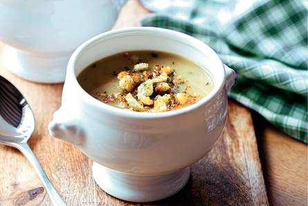

Lekker met wat geraspte (extra) belegen of oude kaas.
ingrediënten
2 uien
1 kruimige aardappelen
2 tl gedroogde tijm
750 ml rundvleesbouillontabletten
1 mespunt gedroogde nootmuskaat
1 el citroensap
4 sneetjes verse ciabatta's
2 el verse peterselie
1 el traditionele olijfolie
Bereidingswijze
Snipper de ui fijn. Schil de aardappelen en snijd in blokjes. Verhit ¾ van de olie in een soeppan en fruit de ui, aardappel en tijm 10 min. met de deksel op de pan. Voeg de bouillon toe, breng aan de kook en laat 5-10 min. zachtjes koken. Pureer met de staafmixer tot een romige soep. Breng op smaak met de nootmuskaat, het citroensap, peper en zout.
Verwarm de ovengrill voor. Verkruimel de ciabatta en snijd de peterselie fijn. Meng het broodkruim met de peterselie, de rest van de olie en peper. Schep de uiensoep in kommen en strooi het broodkruim erover. Schuif onder de hete grill en laat het kruim in 3-4 min. goudbruin kleuren.

Tip 100% lactosevrij? Alle ingrediënten in dit recept zijn lactosevrij. De ciabatta en rundvleesbouillon worden echter geproduceerd in een omgeving waar ook melkproducten verwerkt worden. Hoewel de kans klein is, zouden deze producten daarom sporen van lactose kunnen bevatten.